SiFT
Layout design of search engine that categorizes media based on sensory learning styles
Overview
This web application project was submitted to CalHacks 6.0, a 48-hour hackathon, in October 2019. Our goal was to develop a platform to more effectively gather educational resources. We were inspired by the chance to develop a tool that we would enjoy using. In our own lives, we've found that while there are usually really good articles and sources, often times it helps to draw from a variety of sources, approaching topics from different perspectives and approaches is a crucial step in the learning process.
I worked on the front-end. I developed the visuals and graphic identity of the project, as well as wrote much of the HTML, CSS, and Javascript. I focused on mainly the user interaction portion of the web application as well as its accessibility.
Problem
We aimed to develop a web application for students (teenagers to young adults) who may not learn well in traditional classroom lecture environments. We understand that there are many different types of learners out there, whether they be hands-on learners or people who can only learn after watching others complete a hard task, and we wanted to address their needs to provide an accessible learning tool.
Audience
Our audience are college students that don't learn well in traditional classroom lecture environments, or want to conduct further research on topics that accomodate to their particular learning styles.
Approach and Research
We want to develop a site that allows a user to search for terms, and have the results be presented according to their preferred learning style. In this case we give three preliminary options-- results sorted by images, by videos and podcasts, and by instructional text methods of which people can follow along. These stem from our research of the three learning styles in people identified by Walter Burke Barbe and his associates include the Visualizing (learning by seeing), Auditory (learning by listening), and Kinesthetic (or hands-on) learning styles. Our product is named Sift, which references the "sifting" of information. It is also an acronym for "Styles in Finding Things."
Gallery
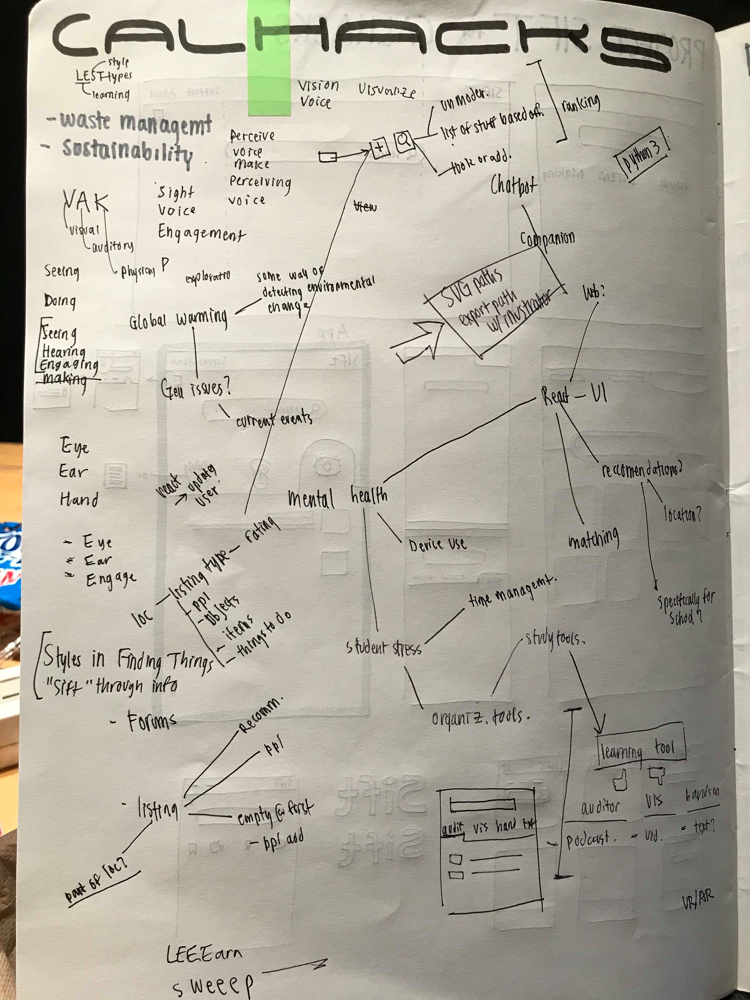 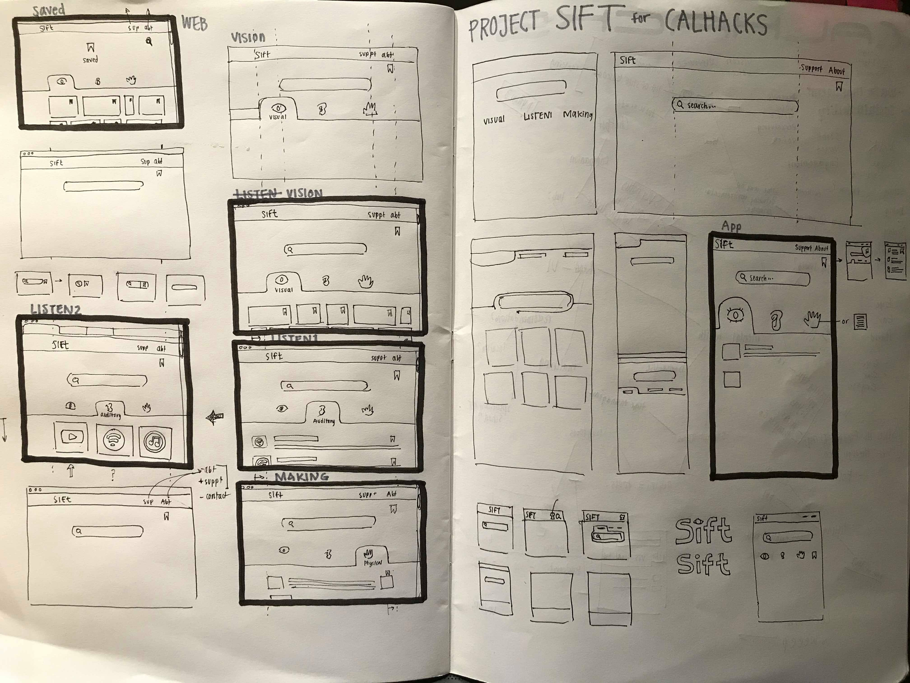 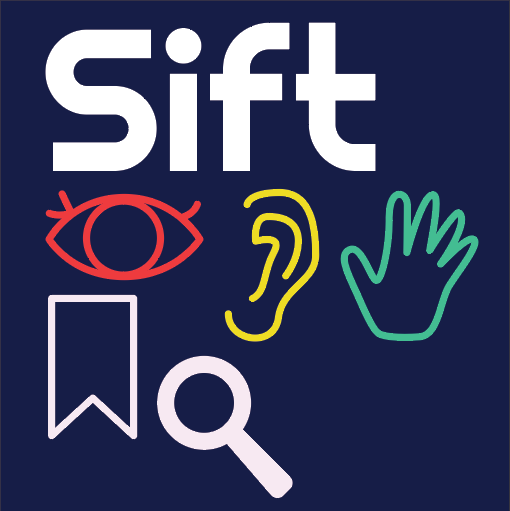 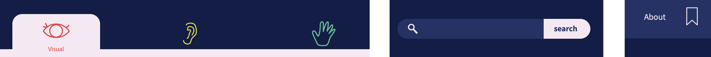Development
The first three images are photoshop mockups which plan for the coded layout. The fourth, fifth, and sixth images are of the coded file.
Gallery
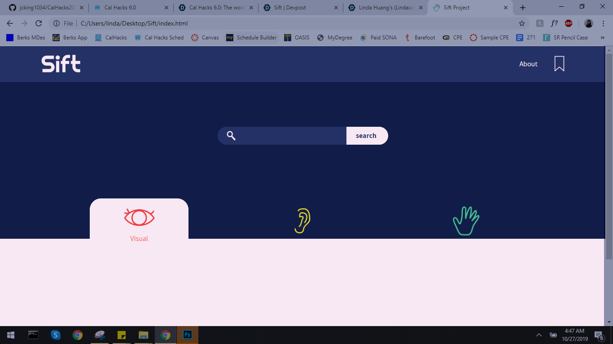 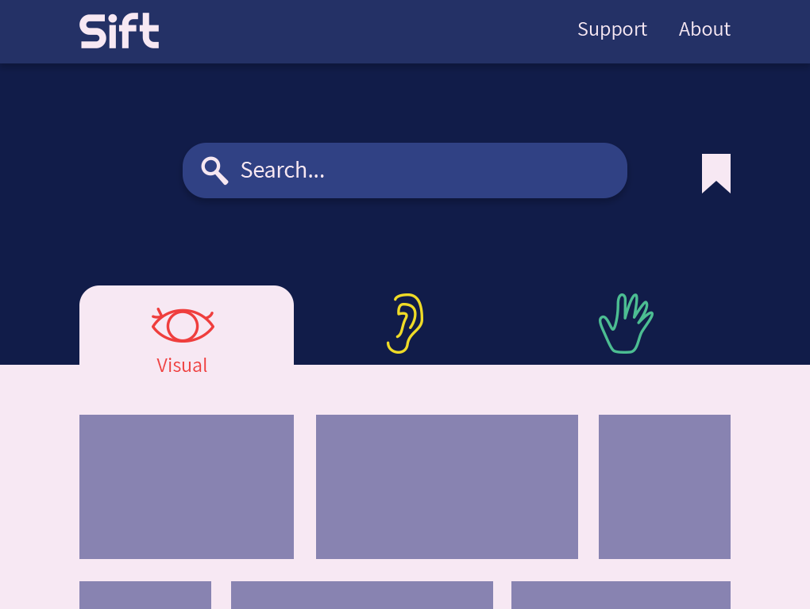 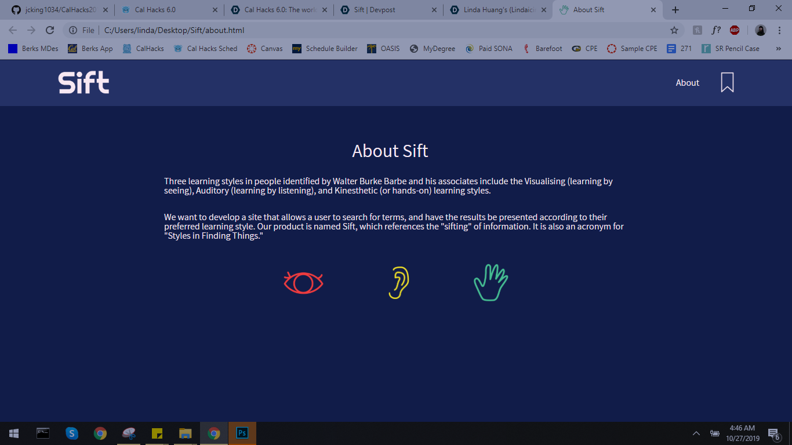 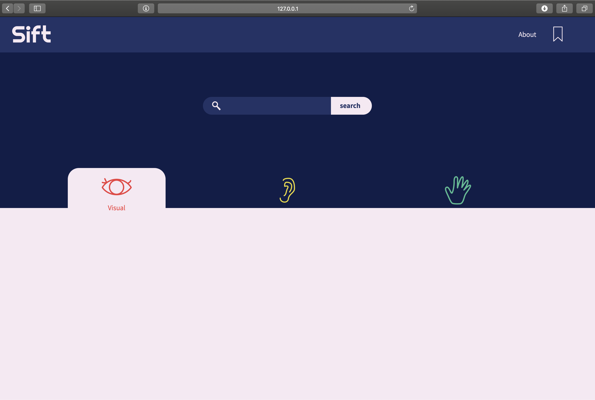 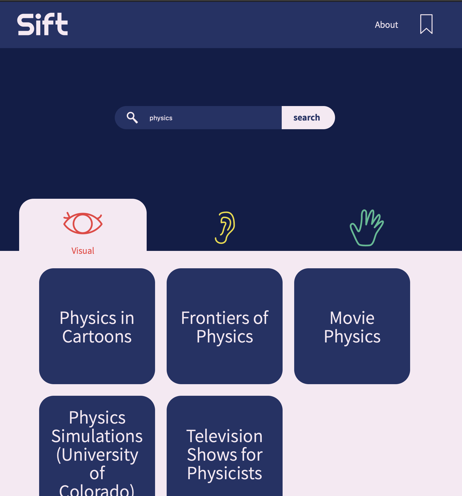Final Product
Gallery
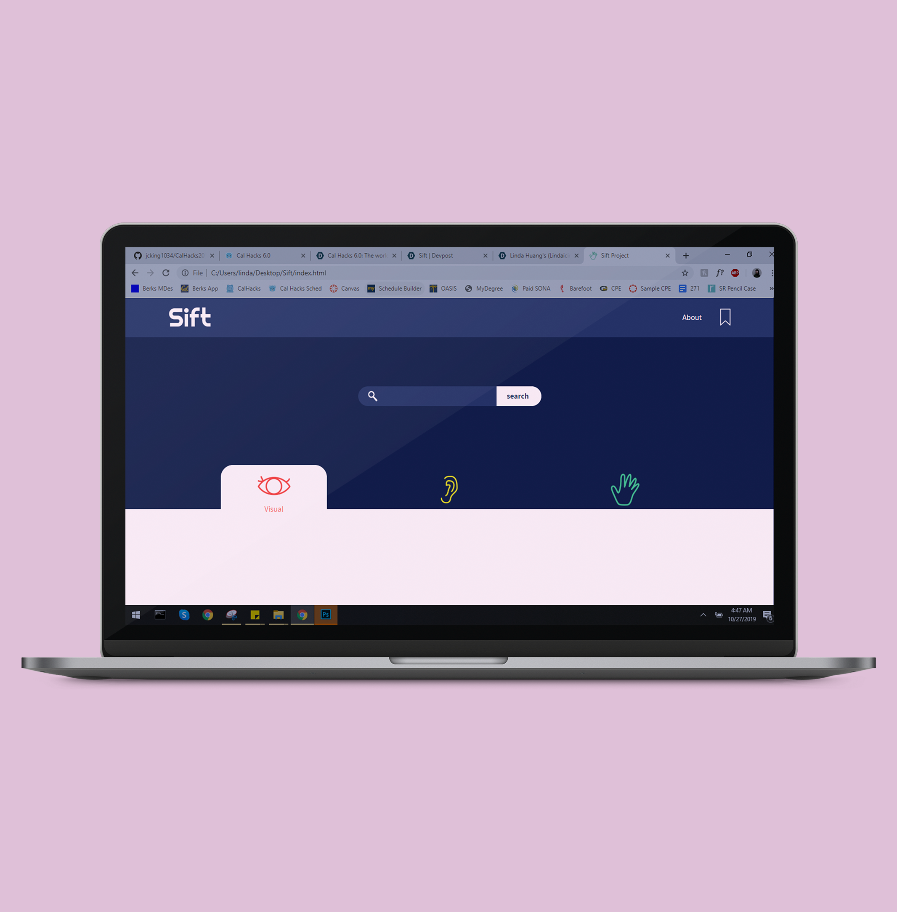 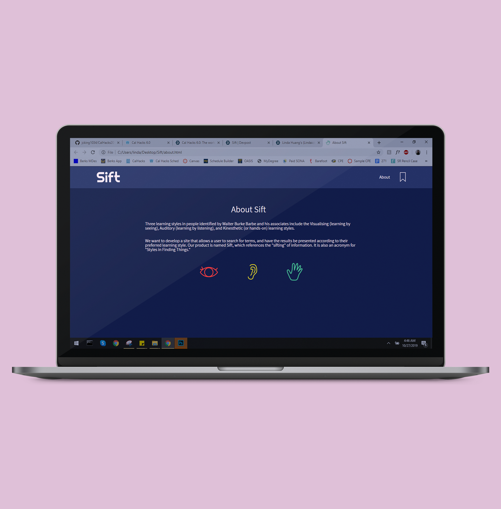